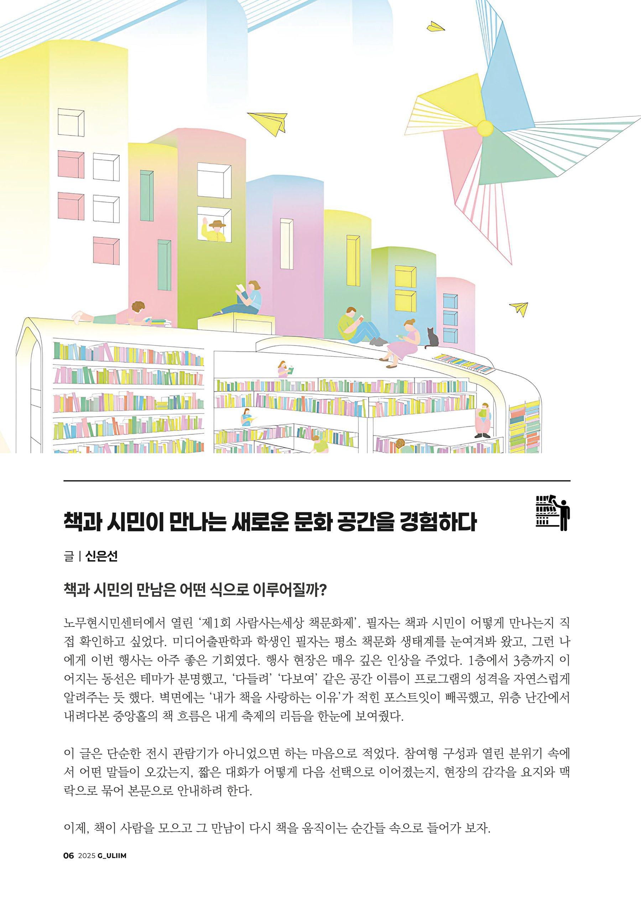
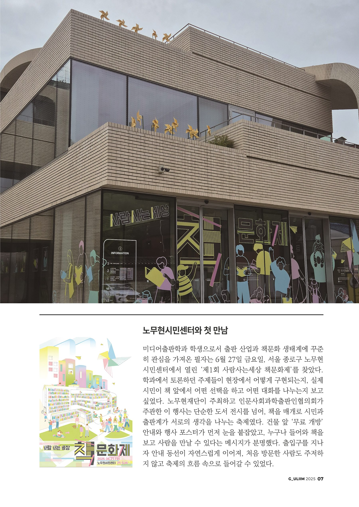
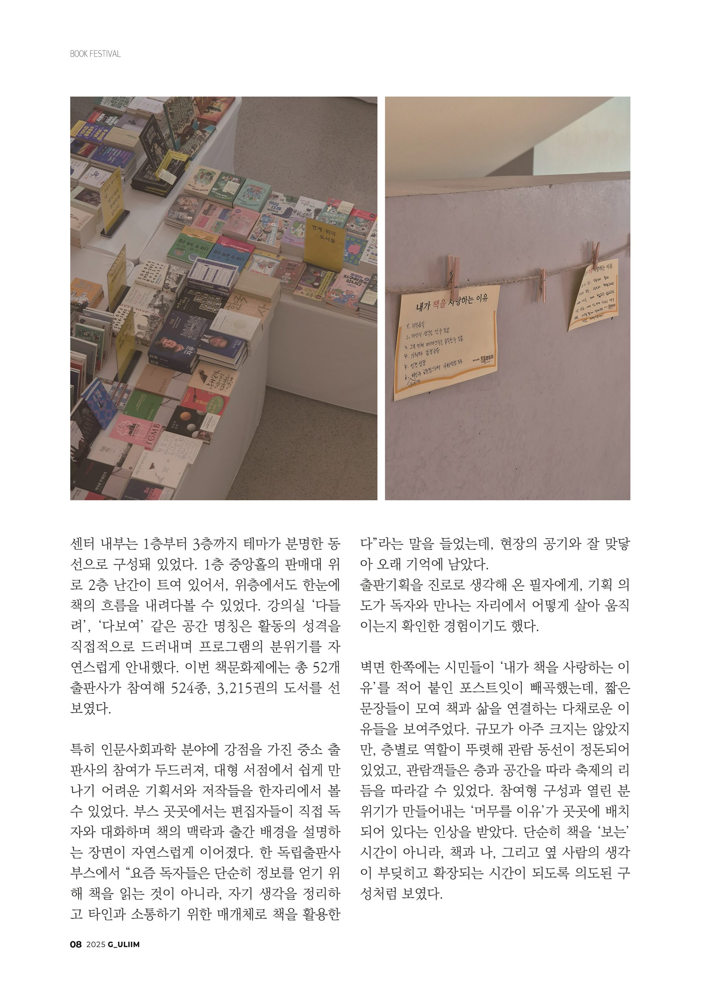
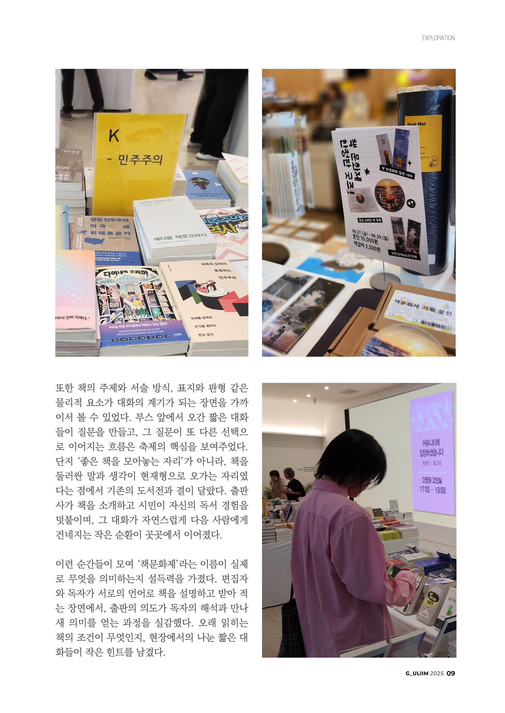
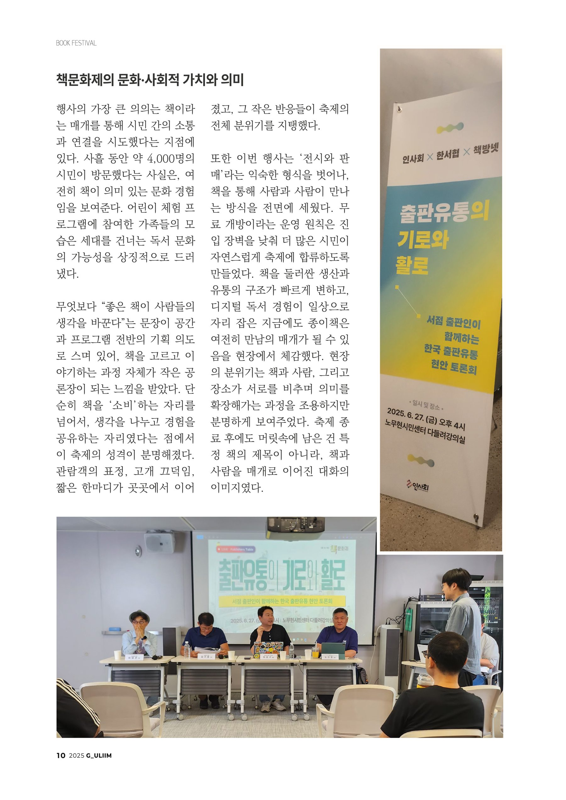
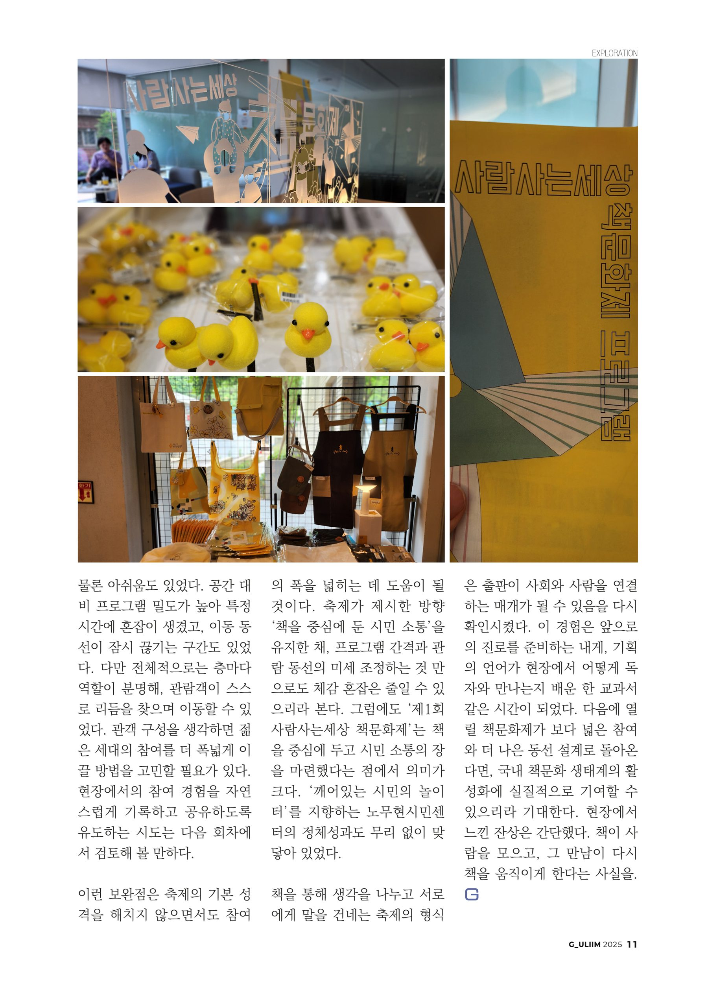

책과 시민이 만나는 새로운 문화 공간을 경험하다
‘제1회 사람사는세상 책문화제’ 취재기
지면에서 옮긴 텍스트예요 · 사진과 레이아웃은 ‘지면으로 보기’에서 볼 수 있어요
책과 시민의 만남은 어떤 식으로 이루어질까?
노무현시민센터에서 열린 ‘제1회 사람사는세상 책문화제’. 필자는 책과 시민이 어떻게 만나는지 직접 확인하고 싶었다. 미디어출판학과 학생인 필자는 평소 책문화 생태계를 눈여겨봐 왔고, 그런 나에게 이번 행사는 아주 좋은 기회였다. 행사 현장은 매우 깊은 인상을 주었다. 1층에서 3층까지 이어지는 동선은 테마가 분명했고, ‘다들려’ ‘다보여’ 같은 공간 이름이 프로그램의 성격을 자연스럽게 알려주는 듯 했다. 벽면에는 ‘내가 책을 사랑하는 이유’가 적힌 포스트잇이 빼곡했고, 위층 난간에서 내려다본 중앙홀의 책 흐름은 내게 축제의 리듬을 한눈에 보여줬다.
이 글은 단순한 전시 관람기가 아니었으면 하는 마음으로 적었다. 참여형 구성과 열린 분위기 속에서 어떤 말들이 오갔는지, 짧은 대화가 어떻게 다음 선택으로 이어졌는지, 현장의 감각을 요지와 맥락으로 묶어 본문으로 안내하려 한다.
이제, 책이 사람을 모으고 그 만남이 다시 책을 움직이는 순간들 속으로 들어가 보자.
노무현시민센터와 첫 만남
미디어출판학과 학생으로서 출판 산업과 책문화 생태계에 꾸준히 관심을 가져온 필자는 6월 27일 금요일, 서울 종로구 노무현시민센터에서 열린 ‘제1회 사람사는세상 책문화제’를 찾았다. 학과에서 토론하던 주제들이 현장에서 어떻게 구현되는지, 실제 시민이 책 앞에서 어떤 선택을 하고 어떤 대화를 나누는지 보고 싶었다. 노무현재단이 주최하고 인문사회과학출판인협의회가 주관한 이 행사는 단순한 도서 전시를 넘어, 책을 매개로 시민과 출판계가 서로의 생각을 나누는 축제였다. 건물 앞 ‘무료 개방’ 안내와 행사 포스터가 먼저 눈을 붙잡았고, 누구나 들어와 책을 보고 사람을 만날 수 있다는 메시지가 분명했다. 출입구를 지나자 안내 동선이 자연스럽게 이어져, 처음 방문한 사람도 주저하지 않고 축제의 흐름 속으로 들어갈 수 있었다.
센터 내부는 1층부터 3층까지 테마가 분명한 동선으로 구성돼 있었다. 1층 중앙홀의 판매대 위로 2층 난간이 트여 있어서, 위층에서도 한눈에 책의 흐름을 내려다볼 수 있었다. 강의실 ‘다들려’, ‘다보여’ 같은 공간 명칭은 활동의 성격을 직접적으로 드러내며 프로그램의 분위기를 자연스럽게 안내했다. 이번 책문화제에는 총 52개 출판사가 참여해 524종, 3,215권의 도서를 선보였다.
특히 인문사회과학 분야에 강점을 가진 중소 출판사의 참여가 두드러져, 대형 서점에서 쉽게 만나기 어려운 기획서와 저작들을 한자리에서 볼 수 있었다. 부스 곳곳에서는 편집자들이 직접 독자와 대화하며 책의 맥락과 출간 배경을 설명하는 장면이 자연스럽게 이어졌다. 한 독립출판사 부스에서 “요즘 독자들은 단순히 정보를 얻기 위해 책을 읽는 것이 아니라, 자기 생각을 정리하고 타인과 소통하기 위한 매개체로 책을 활용한다”라는 말을 들었는데, 현장의 공기와 잘 맞닿아 오래 기억에 남았다.
출판기획을 진로로 생각해 온 필자에게, 기획 의도가 독자와 만나는 자리에서 어떻게 살아 움직이는지 확인한 경험이기도 했다.
벽면 한쪽에는 시민들이 ‘내가 책을 사랑하는 이유’를 적어 붙인 포스트잇이 빼곡했는데, 짧은 문장들이 모여 책과 삶을 연결하는 다채로운 이유들을 보여주었다. 규모가 아주 크지는 않았지만, 층별로 역할이 뚜렷해 관람 동선이 정돈되어 있었고, 관람객들은 층과 공간을 따라 축제의 리듬을 따라갈 수 있었다. 참여형 구성과 열린 분위기가 만들어내는 ‘머무를 이유’가 곳곳에 배치되어 있다는 인상을 받았다. 단순히 책을 ‘보는’ 시간이 아니라, 책과 나, 그리고 옆 사람의 생각이 부딪히고 확장되는 시간이 되도록 의도된 구성처럼 보였다.
또한 책의 주제와 서술 방식, 표지와 판형 같은 물리적 요소가 대화의 계기가 되는 장면을 가까이서 볼 수 있었다. 부스 앞에서 오간 짧은 대화들이 질문을 만들고, 그 질문이 또 다른 선택으로 이어지는 흐름은 축제의 핵심을 보여주었다. 단지 ‘좋은 책을 모아놓는 자리’가 아니라, 책을 둘러싼 말과 생각이 현재형으로 오가는 자리였다는 점에서 기존의 도서전과 결이 달랐다. 출판사가 책을 소개하고 시민이 자신의 독서 경험을 덧붙이며, 그 대화가 자연스럽게 다음 사람에게 건네지는 작은 순환이 곳곳에서 이어졌다.
이런 순간들이 모여 ‘책문화제’라는 이름이 실제로 무엇을 의미하는지 설득력을 가졌다. 편집자와 독자가 서로의 언어로 책을 설명하고 받아 적는 장면에서, 출판의 의도가 독자의 해석과 만나 새 의미를 얻는 과정을 실감했다. 오래 읽히는 책의 조건이 무엇인지, 현장에서의 나눈 짧은 대화들이 작은 힌트를 남겼다.
책문화제의 문화·사회적 가치와 의미
행사의 가장 큰 의의는 책이라는 매개를 통해 시민 간의 소통과 연결을 시도했다는 지점에 있다. 사흘 동안 약 4,000명의 시민이 방문했다는 사실은, 여전히 책이 의미 있는 문화 경험임을 보여준다. 어린이 체험 프로그램에 참여한 가족들의 모습은 세대를 건너는 독서 문화의 가능성을 상징적으로 드러냈다.
무엇보다 “좋은 책이 사람들의 생각을 바꾼다”는 문장이 공간과 프로그램 전반의 기획 의도로 스며 있어, 책을 고르고 이야기하는 과정 자체가 작은 공론장이 되는 느낌을 받았다. 단순히 책을 ‘소비’하는 자리를 넘어서, 생각을 나누고 경험을 공유하는 자리였다는 점에서 이 축제의 성격이 분명해졌다. 관람객의 표정, 고개 끄덕임, 짧은 한마디가 곳곳에서 이어졌고, 그 작은 반응들이 축제의 전체 분위기를 지탱했다.
또한 이번 행사는 ‘전시와 판매’라는 익숙한 형식을 벗어나, 책을 통해 사람과 사람이 만나는 방식을 전면에 세웠다. 무료 개방이라는 운영 원칙은 진입 장벽을 낮춰 더 많은 시민이 자연스럽게 축제에 합류하도록 만들었다. 책을 둘러싼 생산과 유통의 구조가 빠르게 변하고, 디지털 독서 경험이 일상으로 자리 잡은 지금에도 종이책은 여전히 만남의 매개가 될 수 있음을 현장에서 체감했다. 현장의 분위기는 책과 사람, 그리고 장소가 서로를 비추며 의미를 확장해가는 과정을 조용하지만 분명하게 보여주었다. 축제 종료 후에도 머릿속에 남은 건 특정 책의 제목이 아니라, 책과 사람을 매개로 이어진 대화의 이미지였다.
물론 아쉬움도 있었다. 공간 대비 프로그램 밀도가 높아 특정 시간에 혼잡이 생겼고, 이동 동선이 잠시 끊기는 구간도 있었다. 다만 전체적으로는 층마다 역할이 분명해, 관람객이 스스로 리듬을 찾으며 이동할 수 있었다. 관객 구성을 생각하면 젊은 세대의 참여를 더 폭넓게 이끌 방법을 고민할 필요가 있다. 현장에서의 참여 경험을 자연스럽게 기록하고 공유하도록 유도하는 시도는 다음 회차에서 검토해 볼 만하다.
이런 보완점은 축제의 기본 성격을 해치지 않으면서도 참여의 폭을 넓히는 데 도움이 될 것이다. 축제가 제시한 방향 ‘책을 중심에 둔 시민 소통’을 유지한 채, 프로그램 간격과 관람 동선의 미세 조정하는 것 만으로도 체감 혼잡은 줄일 수 있으리라 본다. 그럼에도 ‘제1회 사람사는세상 책문화제’는 책을 중심에 두고 시민 소통의 장을 마련했다는 점에서 의미가 크다. ‘깨어있는 시민의 놀이터’를 지향하는 노무현시민센터의 정체성과도 무리 없이 맞닿아 있었다.
책을 통해 생각을 나누고 서로에게 말을 건네는 축제의 형식은 출판이 사회와 사람을 연결하는 매개가 될 수 있음을 다시 확인시켰다. 이 경험은 앞으로의 진로를 준비하는 내게, 기획의 언어가 현장에서 어떻게 독자와 만나는지 배운 한 교과서 같은 시간이 되었다. 다음에 열릴 책문화제가 보다 넓은 참여와 더 나은 동선 설계로 돌아온다면, 국내 책문화 생태계의 활성화에 실질적으로 기여할 수 있으리라 기대한다. 현장에서 느낀 잔상은 간단했다. 책이 사람을 모으고, 그 만남이 다시 책을 움직이게 한다는 사실을.
6쪽 · 지면을 누르면 크게 볼 수 있어요





